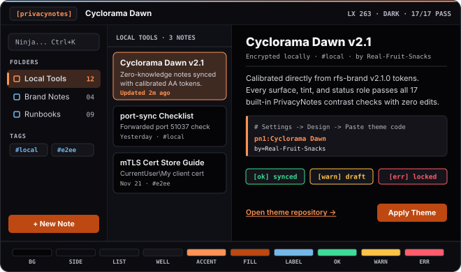
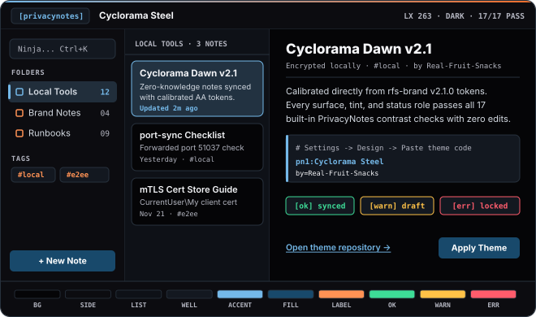
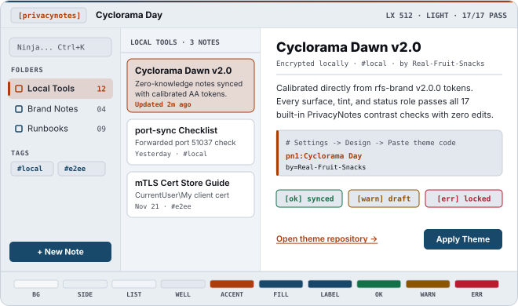

[rfs-brand v2.0.0]
CYCLORAMA DAWN
CYCLORAMA DAWN
FOR EVERY APP.
One calibrated Steel & Beacon Orange theme repository for everyday applications. Every port ships with native copy-paste configs, live workspace previews, and automated WCAG AA contrast checks.
[app 01 · notes & writing]
PrivacyNotes
Three Cyclorama Dawn pn1: theme codes for privacynotes.app. Every surface, accent tint, folder label, and status role passes all 17 built-in PrivacyNotes contrast checks with zero edits.
[install]
Settings → Design → Paste theme code

Cyclorama Dawn
[17/17 pass]Matte #050507 cyclorama ground paired with luminous Beacon Orange (#FF9254) focus, deep Beacon (#BD4811) action fills, and Steel Blue (#74B8E8) folders & tags.
[pn1] PrivacyNotes theme code
pn1:Cyclorama Dawn:050507,0C0C10,2A2C35,F4F5F8,B3B5C0,FF9254:list=0F1016,paper=050507,well=14141A,soft=D6D8E0,hover=FFB07A,fill=BD4811,fillhover=9E3B0C,danger=F06292,warning=FFC247,success=3DDC97,label=74B8E8,by=Real-Fruit-Snacks
Cyclorama Steel
[17/17 pass]Cooler steel-charcoal surfaces on matte #050507 with Cyclorama Steel (#74B8E8) active controls, deep Steel (#18496B) fills, and Beacon Orange (#FF9254) folders & tags.
[pn1] PrivacyNotes theme code
pn1:Cyclorama Steel:050507,0C0C10,27313D,F4F5F8,B3B5C0,74B8E8:list=0E1117,paper=050507,well=131820,soft=D6DCE4,hover=99CDF2,fill=18496B,fillhover=123955,danger=F06292,warning=FFC247,success=3DDC97,label=FF9254,by=Real-Fruit-Snacks
Cyclorama Day
[17/17 pass]Alabaster Day (#F5F7F9) daylight studio with pure white (#FFFFFF) writing paper, burnt Beacon (#AD3D0A) links, and authoritative Steel (#18496B / #164669) buttons & labels.
[pn1] PrivacyNotes theme code
pn1:Cyclorama Day:F5F7F9,E9EEF3,C8D0DA,0D1016,474D59,AD3D0A:list=F0F3F7,paper=FFFFFF,well=E3E8EE,soft=252A34,hover=8B2F06,fill=18496B,fillhover=113752,danger=B51754,warning=8D5400,success=127247,label=164669,by=Real-Fruit-Snacks
[side-by-side gallery]
All PrivacyNotes Variants
Compare all three lighting cues at once or copy any pn1: string directly to your clipboard.
Cyclorama Steel
LX 263 Dark · Steel AccentCyclorama Day
LX 512 Light · Alabaster Day
[extensible multi-app layout]
Built to Hold Every Application Port
Every app lives in its own folder under apps/<app>/ alongside native artifacts, SVG previews, and CI contrast checks from brand/rfs.tokens.json.
[tree] Repository layout
v2.0.0
rfs-themes/
├── apps/
│ ├── manifest.json # Central registry of all app ports
│ └── privacynotes/ # First port: 3 verified pn1: themes
│ ├── themes.json # Canonical seeds & overrides
│ ├── codes.txt # Ready-to-paste pn1: strings
│ └── previews/ # 3-pane workspace SVG renders
├── brand/rfs.tokens.json # Synced from rfs-brand v2.0.0
├── tools/verify-themes.py # Automated 17-check contrast CI
└── docs/ # This live GitHub Pages gallery